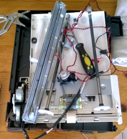
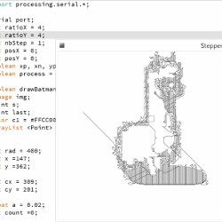
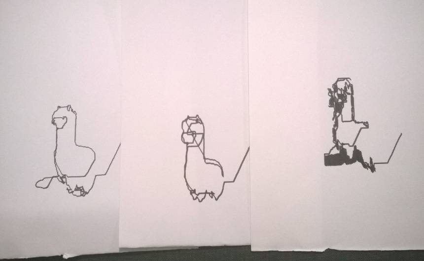

DIY Android Plotter
Hardware
I found an old printer/scanner, after disassembly I found two stepper motors. One in the printer system and the other one in the scanner system. The others axis was provided by continous motor slaved by optique sensor. I wanted to only use step motor, so I combined the scanner and printer with a lot of Duck tape ans cardboard. I had got a Android Uno, and used a Arduino Motor Shield R3 for. There is the code for control the steps motors, write in C using Adafruit_MotorShield library. With this code I'm able to send instructions through USB port.
Image analysis
With the Arduino C code I was only able to add or remove a single step X or Y. In Java/processing I wrote a small code that allows me to go to an XY position to another position. At this point a simple list of XY coordinate was enough to generate a draw. So, I started with a simple Circle Equation :
x=cos(t)
y=sin(t)Plotter in action
DIY Android Plotter from Tristan Brismontier on Vimeo.
